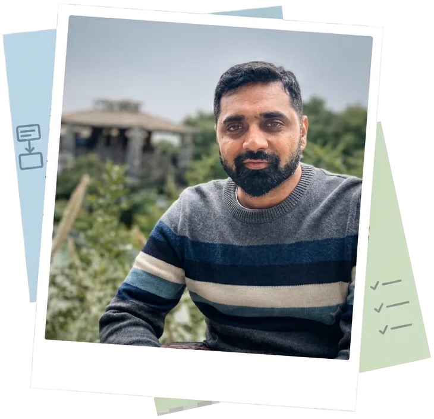

Product design
End-to-end design for complicated products: flows, interaction models, high-fidelity UI and prototypes that teams can react to.
I design products people actually want to use and keep coming back to.

Every case study is told in the same three steps, so you can see the thinking and not only the screens.
What stakeholders asked for, what I saw when I looked, and the problem statement that came out the other side.
What was explored, what was chosen, and what the choice cost. On the page, not buried in a Figma file.
Why the design works, and where AI is involved, what it enables that nothing else would.
End-to-end design for complicated products: flows, interaction models, high-fidelity UI and prototypes that teams can react to.
Giving structure to very large data sets and multi-product platforms, so people can find what they need and trust what they see.
Stakeholder interviews, usability testing and time with customer teams like SOC analysts and field agents, before and after anything ships.
Each one shows the numbers first. Open a case study for how the problem was found, what I traded off, and why the solution holds.
I'm a product designer with over a decade of experience translating business requirements into seamless digital experiences. My focus has mainly been on enterprise software spanning CRMs, e-commerce, cybersecurity and identity and access management (IAM).
My approach is rooted in systems thinking and rapid iteration. I work end to end, starting from user research and information architecture through interaction design to the specs engineering builds from.
Most recently, I was a Staff UX Designer at Saviynt, working on complex workflows in access governance and control monitoring. Before that, I spent three years at Infoblox on cloud and network security, designing for SOC analysts and IT administrators.
I started as a UX engineer, writing the HTML and CSS for the flows I designed. It still shapes how I hand work over: if I can't describe a state precisely enough to build it, it isn't designed yet.
Outside of work, I enjoy travelling, biking and trekking. You'll usually find me exploring somewhere new or heading outdoors for a change of pace. I'm also a foodie, and trying local dishes is always part of the journey.
PDF, 2 pages, 58 KB. A plain document with no macros or scripts, safe to open.
Control Monitoring: continuous control testing, a unified review queue across manual, hybrid and automated controls, and the review and remediation model. Identity Access: access governance, entitlements and privileged access, keeping reviews legible when one campaign covers thousands of users.
End-to-end UX for cloud and network security: threat intelligence, DNS, network visibility. Perspective Policy Builder, Asset Explorer, and dashboards for network performance, threat detection and risk. Research and usability testing with SOC teams and IT professionals.
Led design for Dell's support portals, driving customer self-service to reduce support ticket volume. Designed Dell Field Service Mobile and the new DFS interface, maintained its style guide, and shadowed field agents on the job.
UI and UX for the CRM, including email templates. Prototyped new capabilities to confirm feasibility, wrote the HTML and CSS for the flows I designed, and worked with QA through feature testing.
The fastest way to reach me is email. I'm in Bengaluru, on India Standard Time (UTC+5:30), and happy to work across timezones.